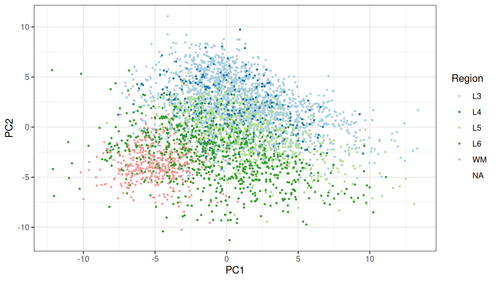
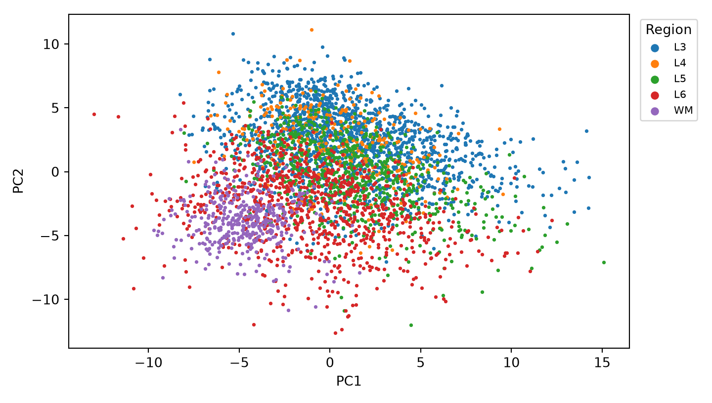

data(HumanDLPFC)
rownames(HumanDLPFC) = rowData(HumanDLPFC)$gene_name
HumanDLPFC = HumanDLPFC[filterGenes(HumanDLPFC, 0.2), ]
set.seed(36)
HumanDLPFC = SpaNorm(HumanDLPFC, sample.p = 0.05, df.tps = 2, verbose = FALSE)Spatially variable genes and PCA
Model-based SVG calling and GLM-based PCA from a SpaNorm fit
SpaNorm gives two outputs that go beyond normalised values. SpaNormSVG() (spanorm_svg() in Python) identifies spatially variable genes (SVGs) by comparing the SpaNorm model with a nested model that has the biological spatial function removed. SpaNormPCA() (spanorm_pca()) then summarises the top SVGs with a GLM-based PCA, by taking residuals from the technical (null) model. To keep this page quick to build, the model uses sample.p = 0.05 (sample_p) and df.tps = 2 (df_tps).
Fit the model
adata = ad.read_h5ad(os.path.join(os.environ["QUARTO_PROJECT_DIR"], "_cache", "HumanDLPFC.h5ad"))
sn.filter_genes(adata, prop=0.2)
sn.spanorm(adata, sample_p=0.05, df_tps=2, random_state=36, verbose=False)Spatially variable genes
The F-test compares the full model against a model containing only library size and gene-wise means. Genes whose spatial pattern is not explained by library size alone get a small p-value. The statistics are stored in the rowData (R) or var (Python) of the object, as svg.F, svg.p and svg.fdr (svg_F, svg_p, svg_fdr).
HumanDLPFC = SpaNormSVG(HumanDLPFC, verbose = FALSE)
svgs = topSVGs(HumanDLPFC, n = 10)
svgssn.spanorm_svg(adata, verbose=False)
svgs = sn.top_svgs(adata, n=10)
svgs
#> svg_F svg_p svg_fdr
#> SCGB1D2 570.088565 0.000000e+00 0.000000e+00
#> SCGB2A2 1399.834469 0.000000e+00 0.000000e+00
#> MBP 426.041021 2.533970e-306 2.118399e-303
#> PLP1 272.023482 3.889670e-207 2.438823e-204
#> GFAP 245.281228 1.042699e-188 5.230181e-186
#> SAA1 239.484430 1.159639e-184 4.847292e-182
#> MGP 212.573017 1.248613e-165 4.473602e-163
#> KRT8 186.751443 5.661126e-147 1.774763e-144
#> CARTPT 182.051923 1.553166e-143 4.328157e-141
#> TFF1 173.455785 3.275145e-137 8.214063e-135topSVGs() (top_svgs()) ranks genes by F statistic and keeps those below an FDR threshold (fdr = 0.05 by default). With n = Inf (n=np.inf) all genes passing the threshold are returned.
nrow(topSVGs(HumanDLPFC, n = Inf, fdr = 0.05))
#> [1] 311len(sn.top_svgs(adata, n=np.inf, fdr=0.05))
#> 307GLM-based PCA
SpaNormPCA() takes the deviance (or Pearson) residuals of the null model for the top nsvgs SVGs and decomposes them. Using SVGs focuses the components on spatially structured biology, while the null model has already removed library size and gene means.
HumanDLPFC = SpaNormPCA(HumanDLPFC, nsvgs = 500, ncomponents = 10)
pcs = data.frame(
reducedDim(HumanDLPFC, "PCA")[, 1:2],
Region = HumanDLPFC$AnnotatedCluster
)
p_pca = ggplot(pcs, aes(PC1, PC2, colour = Region)) +
geom_point() +
scale_colour_brewer(palette = "Paired") +
theme_bw()
p_pca
sn.spanorm_pca(adata, nsvgs=500, ncomponents=10)
pcs = adata.obsm["X_spanorm_pca"]
fig, ax = plt.subplots(figsize=(7.5, 4.25))
for region, idx in adata.obs.groupby("AnnotatedCluster", observed=True).indices.items():
ax.scatter(pcs[idx, 0], pcs[idx, 1], s=3, label=region)
ax.set_xlabel("PC1")
ax.set_ylabel("PC2")
ax.legend(title="Region", markerscale=3, fontsize=8, bbox_to_anchor=(1.01, 1), loc="upper left")
fig.tight_layout()
plt.show()
The components separate the cortical layers and white matter. In R the result is stored in reducedDim(spe, "PCA") (the name argument sets the slot), in Python in adata.obsm["X_spanorm_pca"] (key_added). Both are ordinary embeddings, so any downstream tool (clustering, UMAP) can use them.
nsvgs (default 3000) caps how many top SVGs are used, svg.fdr (svg_fdr) additionally restricts them by FDR, and residuals chooses "deviance" (default) or "pearson". Setting nsvgs = Inf (nsvgs=np.inf) uses every gene passing svg.fdr.